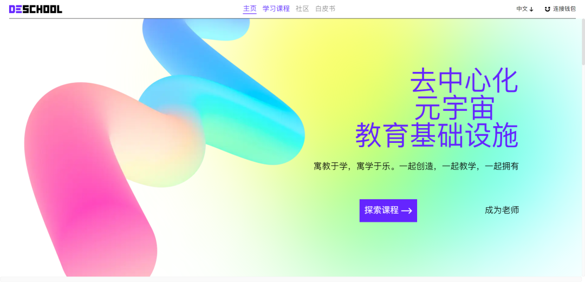

我们很高兴向大家宣布：由SeeDAO战略孵化的Web3 在线教育基础设施DeSchool，已于2022年12月底以1500万美金估值完成了种子轮融资，其投资人包括Y2Z Venture，火币前COO朱嘉伟、Plancker发起人胡东海、SeeDAO发起人唐晗、SeeDAO发起人白鱼及Unipass 创始人知县。
据悉，DeSchool Pro版本已于2022年11月上线，讲师可利用该工具给完成课程的学员发放SBT教育凭证，Web3组织亦可用该工具简化社区教育流程。未来，DeSchool计划推出链上教育简历功能和链上教育认证计划，成为Web3时代的Coursera+LinkedIn。
“
始于SeeDAO
从想法形成到团队构建，再到产品的落地使用，DeSchool都发端于SeeDAO。2022年2月，当SeeDAO发现内部成员的知识框架不在一个水平，因而无法组织大家一同协作生产，甚至无法在一起投票治理时，教育对SeeDAO治理的重要性和急迫性也就凸显出来了。这时，解决DAO内教育的想法就像一颗种子，它逐渐在SeeDAO生根发芽，并最终结出了两颗果实：内容上是组织社区自我教育的Web3大学，产品上则是DeSchool。
SeeDAO固然为DeSchool项目的启动提供了最初的财务支持，但这绝不是最重要的。我们很高兴看到SeeDAO产品公会和开发者公会是怎样参与到DeSchool的构建中的。我们也欣然看到SeeDAO投研公会中的Web3大学是怎样为DeSchool提供内容和需求，促使这个产品一步步成型。此外，SeeDAO治理公会也将运营学院的课程悉数搬上，获取运营学院的SBT课程凭证已经成为了SeeDAO某些公共岗位的前提。
SeeDAO与DeSchool之间的关系，不是一般的孵化器和项目方之间的关系，而像是母体与孩子，大树的根与果实。DeSchool因SeeDAO需求而生，得SeeDAO滋养而壮大。当它终于完成种子轮融资，走向独立时，SeeDAO祝福DeSchool能够将步子迈的更大，走得更远。我们真诚希望DeSchool不仅能解决SeeDAO一个DAO的教育、治理和人力资源管理问题，也能为其他面临类似问题的社区提供解决方案。希望除SeeDAO外，更多人和组织能够参与进来，与DeSchool携手探索Web3时代的教育模式和生产协作方式。

“
SeeDAO如何赋能DeSchool？
在接下来的时间里，SeeDAO将会以这些方式支持DeSchool：
我们已经将SeeDAO的新人Onboarding步骤拆分至DeSchool。自此以后，DeSchool是SeeDAO唯一合法的新人Onboarding入口，是社区成员获取SeeDAO成员身份SBT的唯一渠道。也就是说，SeeDAO每新增一名正式成员，DeSchool也将收获一名新增用户。
我们将尽量把SeeDAO沉淀的视频内容从Notion或其他平台迁移至DeSchool上，增加DeSchool的内容量。
我们正在将基于DeSchool的教育SBT与SeeDAO的工作体系和治理体系结合，探索新的人力资源管理方式，让发行在DeSchool上的教育SBT成为真正有用的人力资产。
与DeSchool在社区教育和知识分享方向上进行合作，展开更多的实践探索。
“
DeSchool如何赋能SeeDAO？
“
向虚拟进军
自SeeDAO元规则发布后，SeeDAO就将自己的使命定义为能够连接100万华人的数字城邦。要实现这样一个目标，我们所要实现的第一件事，就是从一个寄生在Discord上的SeeDAO，转变成一个真正能在链上组合运转的“城邦”。这个时期在SeeDAO内也被称为“虚拟进军”时期。在此期间，SeeDAO战略孵化器的首要任务，就是孵化能让SeeDAO运作的基础设施。
DAO工具对DAO运作的重要性不言而喻。没有这些DAO工具，现实中就不可能出现仅存在于人类美好幻想中的DAO；就像没有蒸汽机，就难以想象现代的工业文明和广泛的公司制。反过来亦如是，好的DAO也会成就一代DAO工具。没有哪款风靡的工具会诞生在空想中。
如果说SeeDAO要成为数字城邦，那么我们所孵化的产品就像是拼接这个繁华城邦的乐高。他们天然就是一个生态，能够拼接在一起，能由不同的组织根据自己的需求拼接出不同的模样。DeSchool是SeeDAO“虚拟进军”第一个落地的果实，也是数字城邦的第一块积木。我们很高兴城邦的第一块积木从教育开始，也欢迎更多人参与其中，一同来为DAO时代搭建新的积木，一同向Web3的虚拟进军。